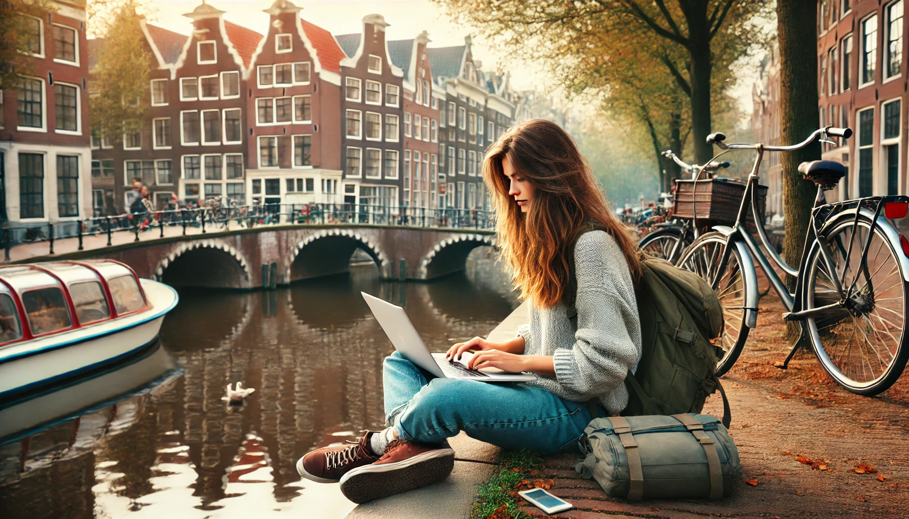

AMSTERDAM, PUENTES EN BICI

Ámsterdam es una ciudad que se explora mejor perdiéndose en sus calles. Desde el momento en que llegué, me enamoré de sus canales, sus puentes adornados con flores y las casas estrechas que parecen inclinarse sobre el agua como viejos amigos. Alquilar una bicicleta fue mi primera decisión, y fue la mejor manera de moverme por la ciudad. Pedaleando por los puentes y siguiendo los reflejos del sol en el agua, llegué al barrio de Jordaan, un lugar que combina a la perfección lo tradicional y lo moderno. Sus calles empedradas están llenas de cafés acogedores, tiendas de diseño y galerías de arte. Una de mis paradas favoritas fue la Casa de Ana Frank. Visitar este lugar fue un momento conmovedor, una conexión íntima con la historia que me dejó reflexionando profundamente.
Ámsterdam es también un destino que deleita el paladar. Cada esquina ofrece algo delicioso, desde los famosos stroopwafels hasta los arenques frescos servidos al estilo tradicional. Mi día comenzaba siempre con un café fuerte acompañado de un pastel de manzana en una cafetería junto al canal. Pero mi experiencia gastronómica más memorable fue en un mercado al aire libre, donde probé quesos locales como el gouda añejo, cremoso y lleno de sabor. También disfruté de la multiculturalidad de la ciudad con una cena de rijsttafel, una experiencia culinaria que me llevó a los sabores de Indonesia. Por la noche, con una copa de cerveza artesanal en mano, observé cómo las luces de los puentes se reflejaban en el agua, creando un ambiente mágico que solo Ámsterdam puede ofrecer.
La bicicleta no solo es un medio de transporte en Ámsterdam, sino una forma de vida. Mientras exploraba el Vondelpark, sentí la libertad y la tranquilidad que esta ciudad inspira. Rodeada de árboles y lagos, con familias y parejas disfrutando del día, fue fácil olvidarme del tiempo. Pero Ámsterdam también es un epicentro del arte y la cultura. El Museo Van Gogh fue una parada obligatoria; estar frente a obras como Los girasoles fue una experiencia que me dejó sin palabras. Mi último día lo dediqué al barrio De Pijp, un lugar vibrante y lleno de vida donde se encuentra el mercado Albert Cuyp. Allí, entre puestos de comida y flores, me despedí de la ciudad con un ramo de tulipanes. Ámsterdam es una ciudad que te invita a moverte, a descubrir y a conectar con su espíritu libre y acogedor. Una experiencia inolvidable que queda grabada en el corazón y en cada pedaleo.